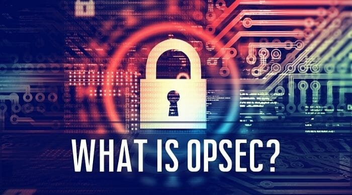

Operational Security (OPSEC)
OPSEC, or operational security, is the process of protecting critical business operations from being exploited by threats. Even strong technical controls can fail if procedures, behaviours, or processes reveal vulnerabilities. It applies mainly to governments, lead organisations, and high-up individuals to prevent data leaks, fraud, and targeted attacks. It's main goal is to identify, assess, and handle risks that are associated with handling information and operational activities.
How it Works
It begins with analysing sensitive information and critical process and deciding whether it needs additional protection. It then identifies potential threats and vulnerabilities that could expose that information before implementing procedures that reduce risks such as access restrictions and securing communications. It is always monitoring and adapting strategies based on changing risks and incidents.
Main Benefits
- Reduces risk of information leaks and operation disruptions
- Protects reputation and trust by safeguarding sensitive processes
- Enhances decisions made by identifying vulnerabilities before being exploited
- Supports compliance with legal policies and security regulations
- Strengthens overall organisational resilience agaisnt cybercrime